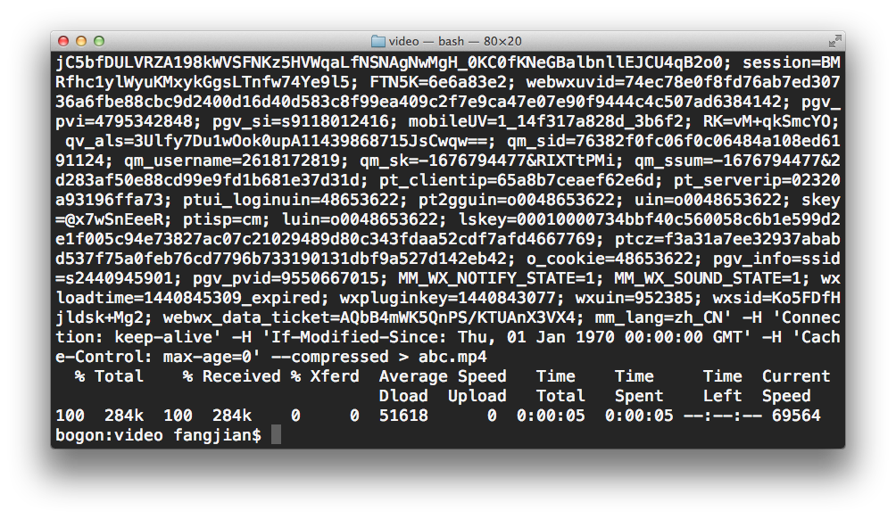
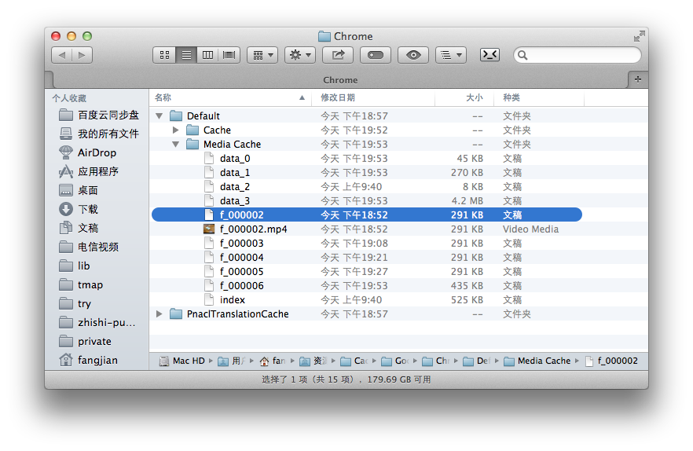

今天朋友说微信小视频传到微信网页版上，可以看，但是点右键下载以后是大小为0的MP4。问怎么破？
我看了下，用chrome的话，至少2个办法。
> abc.mp4 ,稍等一下，视频abc.mp4就下载完成了。
找到缓存位置打开
Windows Vista: C:\Users[USERNAME]\AppData\Local\Google\Chrome\ Windows XP: C:\Documents and Settings[USERNAME]\Local Settings\Application Data\Google\Chrome\ Windows 7/8: C:\Users[USERNAME]\AppData\Local\Google\Chrome\User Data\Default\Cache Mac OS X: /Users/[USERNAME]/Library/Caches/Google/Chrome/
根据文件创建时间，找到疑似文件。把扩展名改为.mp4 试试看。能放就OK了。
